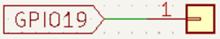
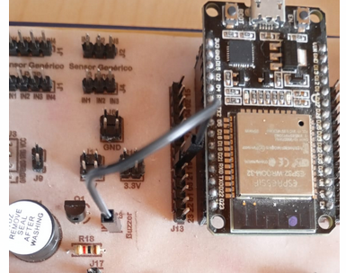

Objetivo. Aprender a utilizar el zumbador con el ESP32. Implementar un bucle for para controlar la duración y repeticiones del tono.
Procedimiento.
-
Conectar el pin GPIO19 del ESP32 al pin positivo del zumbador en el entrenador QMT-020.


- Abrir Thonny y crear un nuevo archivo con extensión .py.
- Escribir el código mostrado a continuación, que genera un tono fijo en el zumbador repetido 4 veces.
-
Ejecutar el programa y observar el sonido del zumbador encendiéndose y apagándose.
#Zumba1 import machine import time # Crea un objeto Pin que representa el pin 19 y lo define en modo salida buzzer = machine.Pin(19, machine.Pin.OUT) # Entra en un ciclo infinito while True: # Itera sobre los valores 0 to 3 usando un ciclo for for i in range(4): # Enciende el zumbador colocando su valor en 1. buzzer.value(1) # Pausa durante 0.2 segundos. time.sleep(0.2) # Apaga el zumbador buzzer.value(0) # Pausa durante 0.2 segundos. time.sleep(0.2) # Pausa durante 1 segundos, antes de reiniciar el ciclo while time.sleep(1)
Actividades sugeridas.
- Cambiar el valor de range en el ciclo for para aumentar o disminuir repeticiones.
- Modificar los intervalos de tiempo para variar la duración de los tonos.
- Hacer que el patrón de sonido siga una secuencia rítmica.
- Guardar el programa en la carpeta local del computador.
- Guardar el programa directamente en el microcontrolador y ejecutarlo sin conexión al PC.